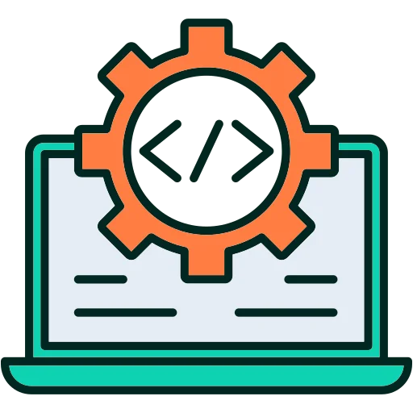

Resultados del Compilador
üåó Cambiar tema
üìÑ Tabla de S√≠mbolos
❌ Errores Léxicos
❌ Errores Sintácticos
üî§ Tokens
üîÅ Historial de los Ciclos
üíª C√≥digo intermedio generado
üìã Copiar c√≥digo
{{INTER_CODE}}
{{SYMBOL_TABLE}}
{{LEXICAL_ERRORS}}
{{SYNTAX_ERRORS}}
{{TOKENS}}
{{WHILE_HISTORY}}